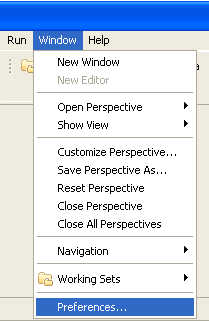
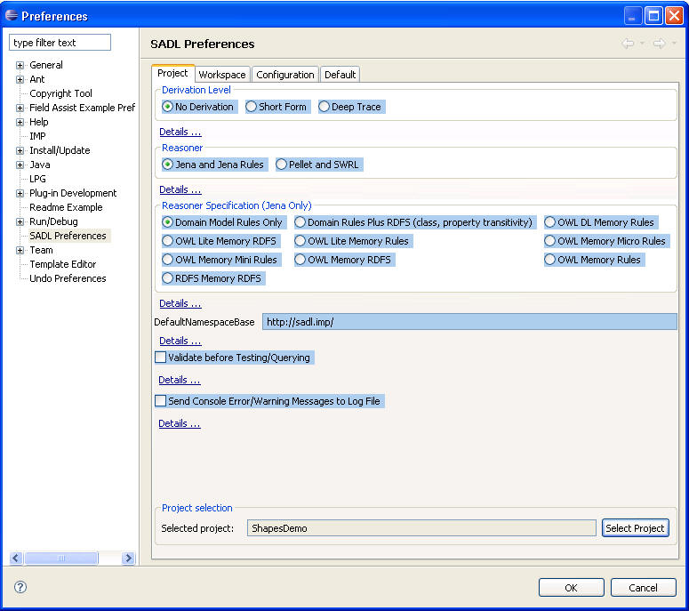
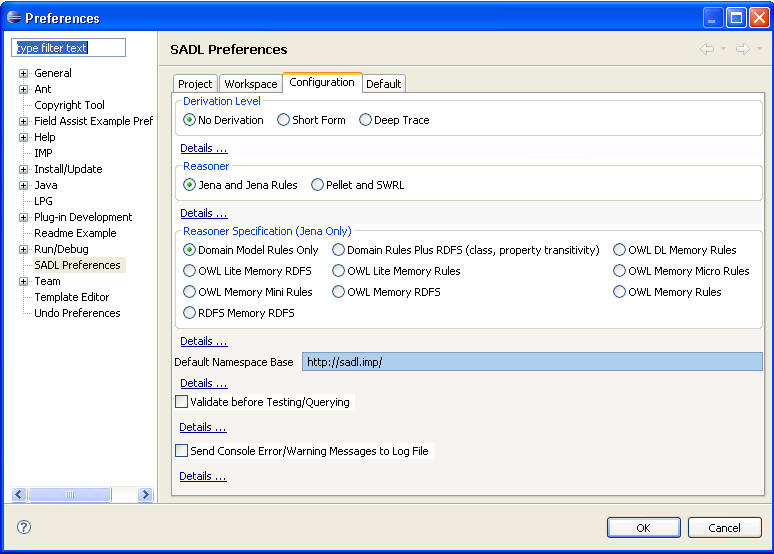

A rule expresses domain logic that is not already expressed in the formalism of an OWL model. A SADL rule consists of two parts.
Because the graph pattern is just that--a pattern--it will have some nodes and/or edges that are not fully specified. These are called variables. In SADL these variables are colored pink to make them easily identifiable. Note that in SADL Version 1, when a variable precedes the period at the end of the rule they must be separated by a space.
In SADL, the premise can be expressed in two parts--the given and the if sections. This division is entirely a SADL-ism and is meant to help the user separate the type of things (in the given) from the more complex conditions (in the if).
Here is a simple rule from the ShapesDemo project that states, "for any instance of a Rectangle (x), the area of the Rectangle (x) is equal to the height of the Rectangle (x) times the width of the Rectangle (x)":
Rule AreaOfRectangle
given x is any Rectangle
then area of x = height of x * width of x .
Another example of a SADL rules is the definition of the cousin relationship in terms of the sibling and child relationships. It is from FamilyRelationships.sadl in the TestSadlIde project:
Rule
Cousin_Rule
given
x is a
Person
y is
a Person
if
x is
sibling of
y
c1 is child
of x
c2 is child
of y
c1 != c2
then
c1 is
cousin of
c2
c2 is cousin
of c1 .
Recall that we discussed using necessary and sufficient conditions to define a Role class, e.g.,
a Woman is a Mother only if child has at least 1 values.
If we do not wish to use this level of OWL reasoning, we can also use a class declaration and rule to express the same logic.
Mother
is a
type of
Woman.
Rule
Mother_Rule
given x
is a
Woman
if
y is child
of x
then x
is a
Mother.
A rule can make a function call, either in the premise or in the conclusion, to a piece of procedural code called a built-in function. A built-in function is a connection from the declarative world of semantic models and rules into the procedural code world. SADL allows the expression of a number of common mathematical operations in formula syntax and then translates them to standard built-ins in the target rule language. However, the built-in could have been used explicitly in SADL and doing so illustrates usage. For example, the multiplication in the conclusion of the AreaOfRectangle rule above could have used the "product" built-in:
Rule
AreaOfRectangle
given x
is any
Rectangle
then
area of
x = product(height
of x,
width of
x) .
Note that this rule is translated to the following in Jena rule syntax:
[AreaOfRectangle: (?x rdf:type p0:Rectangle) , (?x p0:height ?var2) , (?x p0:width ?var3) , product(?var2, ?var3, ?var1) -> (?x p0:area ?var1) ]
The SADL syntax is [hopefully] more easily expressed and understood.
The following built-ins are available:
Target Rule Language Built-in Available Jena Rules Jena-provided built-ins: http://jena.sourceforge.net/inference/index.html#RULEbuiltins Jena Rules SADL-GE built-ins: http://crapo.research.ge.com/djst/SadlBuiltins.html Pellet/SWRL SWRL built-ins: http://www.w3.org/Submission/SWRL/#8
Exercise 11: a)Enhance your t-box model of Exercise 10 by defining Aunt and Uncle and adding rules to infer the triples to connect people to their aunts and uncles. b) Add instances and relationships to your a-box model (if more are needed) and test your enhanced model.
SPARQL is a W3C graph query language for RDF/OWL. Remember that a semantic model is a graph--it consists of triples identifying <node, edge, node>. A query is fundamentally a graph pattern specification, with optional additional filters, which is used to identify what elements from the model (graph) matches the pattern and therefore match the query.
A SPARQL query begins with one of (not case sensitive):
We will mostly use SELECT. SELECT is of the form:
select [distinct] <variables> WHERE { <graph pattern> } [limit <n>] [order by ...]
<variables>: a list of variables,
each preceded by question mark, separated by spaces
<graph pattern>: a set of triples
separated by dots; each element of each triple can be a variable or a concept
from the graph
Examples:
select ?p ?u where {?p <uncle> ?u}
select distinct ?p where {?p <rdf:type> <Mother>}
select ?livingthing ?age where {?livingthing <rdf:type> <LivingThing> . ?livingthing <age> ?age}
construct { ?s ?p ?o} where { {<http://ctp.geae.ge.com/iws/test#ESN123456> <http://ctp.geae.ge.com/iws/iws#module> ?m . ?m <http://ctp.geae.ge.com/iws/iws#component> ?s . ?s ?p ?o . FILTER (sameTerm(?p, <http://ctp.geae.ge.com/iws/iws#remaining_cycles>))}
UNION {<http://ctp.geae.ge.com/iws/test#ESN123456> <http://ctp.geae.ge.com/iws/iws#module> ?m . ?m <http://ctp.geae.ge.com/iws/iws#component> ?s . ?s ?p ?o . FILTER (sameTerm(?p, <http://ctp.geae.ge.com/iws/iws#remaining_hours>))}
UNION {<http://ctp.geae.ge.com/iws/test#ESN123456> <http://ctp.geae.ge.com/iws/iws#module> ?m . ?m <http://ctp.geae.ge.com/iws/iws#component> ?s . ?s ?p ?o . FILTER (sameTerm(?p, <http://ctp.geae.ge.com/iws/iws#llp_life_limit>))}
UNION {<http://ctp.geae.ge.com/iws/test#ESN123456> <http://ctp.geae.ge.com/iws/iws#module> ?m . ?m <http://ctp.geae.ge.com/iws/iws#component> ?s . ?s ?p ?o . FILTER (sameTerm(?p, <http://ctp.geae.ge.com/iws/iws#non_llp_life_limit>))}
UNION { <http://ctp.geae.ge.com/iws/test#ESN123456> <http://ctp.geae.ge.com/iws/iws#module> ?m . ?m <http://ctp.geae.ge.com/iws/iws#component> ?s . OPTIONAL {?s ?p ?o . FILTER (sameTerm(?o, <http://ctp.geae.ge.com/iws/iws#Replace>) ) } . OPTIONAL {?s ?p ?o . FILTER (sameTerm(?o, <http://ctp.geae.ge.com/iws/iws#ReplaceQ>) ) } . OPTIONAL {?s ?p ?o . FILTER (sameTerm(?o, <http://ctp.geae.ge.com/iws/iws#Continue>) ) } . FILTER (sameTerm(?p, <http://ctp.geae.ge.com/iws/iws#disposition>) ) }
UNION { <http://ctp.geae.ge.com/iws/test#ESN123456> <http://ctp.geae.ge.com/iws/iws#module> ?s . OPTIONAL { ?s ?p ?o . FILTER (sameTerm(?o, <http://ctp.geae.ge.com/iws/cf34#Heavy> ) ) } . OPTIONAL { ?s ?p ?o . FILTER (sameTerm(?o, <http://ctp.geae.ge.com/iws/cf34#Light> ) ) } . OPTIONAL { ?s ?p ?o . FILTER (sameTerm(?o, <http://ctp.geae.ge.com/iws/cf34#TC> ) ) } . FILTER (sameTerm(?p, <http://ctp.geae.ge.com/iws/iws#recommended_Workscope>) ) }
UNION { <http://ctp.geae.ge.com/iws/test#ESN123456> <http://ctp.geae.ge.com/iws/iws#module> ?m . ?m <http://ctp.geae.ge.com/iws/iws#component> ?s . OPTIONAL {?s ?p ?o . FILTER (sameTerm(?o, <http://ctp.geae.ge.com/iws/cf34#Major>) ) } . OPTIONAL {?s ?p ?o . FILTER (sameTerm(?o, <http://ctp.geae.ge.com/iws/cf34#Minor>) ) } . OPTIONAL {?s ?p ?o . FILTER (sameTerm(?o, <http://ctp.geae.ge.com/iws/cf34#GVI>) ) } . FILTER (sameTerm(?p, <http://ctp.geae.ge.com/iws/cf34#exposure_level>) ) }
UNION { <http://ctp.geae.ge.com/iws/test#ESN123456> <http://ctp.geae.ge.com/iws/iws#tmcm_module> ?s . OPTIONAL { ?s ?p ?o . FILTER (sameTerm(?o, <http://ctp.geae.ge.com/iws/cf34-3_djst_tmcm_model#Heavy_Work> ) ) } . OPTIONAL { ?s ?p ?o . FILTER (sameTerm(?o, <http://ctp.geae.ge.com/iws/cf34-3_djst_tmcm_model#Light_Work> ) ) } . OPTIONAL { ?s ?p ?o . FILTER (sameTerm(?o, <http://ctp.geae.ge.com/iws/cf34-3_djst_tmcm_model#Inspection> ) ) } . FILTER (sameTerm(?p, <http://ctp.geae.ge.com/iws/iws#tmcm_workscope_action>) )}
UNION { ?s ?p ?o . FILTER (sameTerm(?p, <http://ctp.geae.ge.com/iws/iws#flight_Leg>) ) }
UNION { OPTIONAL { ?s ?p ?o . FILTER (sameTerm(?p, <http://ctp.geae.ge.com/iws/iws#sb_selected>) ) } }
UNION { OPTIONAL { ?s ?p ?o . FILTER (sameTerm(?p, <http://ctp.geae.ge.com/iws/cf34-3#jet_type>) ) } }
UNION { ?s ?p ?o . FILTER (sameTerm(?p, <http://ctp.geae.ge.com/iws/cf34#itt_margin_improvement>) ) }
UNION { ?s ?p ?o . FILTER (sameTerm(?p, <http://ctp.geae.ge.com/iws/iws#addl_llp_usage>) ) }
UNION { ?s ?p ?o . FILTER (sameTerm(?p, <http://ctp.geae.ge.com/iws/iws#addl_non_llp_usage>) ) }
UNION { ?s ?p ?o . FILTER (sameTerm(?p, <http://ctp.geae.ge.com/iws/iws_data_inavailability_handles#flight_Leg_model>) ) }
UNION { OPTIONAL {?s ?p ?o . FILTER (sameTerm(?p, <http://www.w3.org/2000/01/rdf-schema#comment>) && regex(str(?s), "http://ctp.geae.ge.com/iws/test#") )} } }
A SPARQL Quick Reference is available here: http://www.dajobe.org/2005/04-sparql/SPARQLreference-1.7.pdf.
Exercise 12: Run some queries against some of the models that you have created.
The Jena implementation of SPARQL is called ARQ. ARQ extends SPARQL by adding functionality not currently part of the W3C recommendation. Some of these extensions that may be useful include:
Eclipse uses Preferences to customize a plug-ins behavior. SADL uses Eclipse Preferences to manage the kind of reasoning used, the level of explanation of inferences made by the reasoner, the default namespace base URL for new models, and whether model validation is performed before a test or query is executed. In addition, there is a preference to allow Console Window output to be sent to a log file. This is primarily a workaround for an Eclipse 3.2.2 bug limiting output to the Console Window.
To open SADL Preferences, click on Window -> Preferences...

By default, the SADL Preferences will appear with the Project tab selected:

Using the Select Project button on this tab, you can change the preferences for specified projects only. Alternatively, you can change preferences for all projects by going to the Configuration tab:

Here's a little more detail on what the various preferences mean.
Exercise 12: Open the AutoTests/hasValue.sadl model in the TestSadlIde project. Make sure that Jena Reasoner Specification is set to Domain Model Rules Only. Run the test. Now change the Jena Reasoner Specification to OWL Memory RDFS and re-run the test. What difference did you observe? Why was there a difference?
Many information systems assume that all relevant information is contained in the system--the system is "closed." In such a system, any assertion which is not known to be true is assumed to be false. For example, an application using an LDAP repository containing the SSO credentials of GE employees will assume that if someone is not found in the repository then they are not a GE employee. This assumption is sometimes called the closed world assumption.
OWL was designed for the Semantic Web. In an environment as distributed and diverse as the Web it is not likely that one will know everything or have access to all the information. Therefore OWL adopts the open world assumption (OWA). This means that OWL assumes that the truth-value of a statement is independent of whether or not it is known by any single observer or agent (e.g., the current reasoner's knowledge base) to be true. This limits the kinds of inference and deductions the reasoner can make to those that follow from what is known to be true, not from what is not known. Another way of looking at it is that we take the view that we are discovering information and we have no guarantee that we have discovered or will discover complete information.
A system is monotonic if the set of statements in the system is only added to; no statement is ever removed. In practical terms, this not only means that we don't remove assertions, it also means that adding a new assertion never falsifies a conclusion previously reached by the reasoner. The OWA enables an OWL knowledge base to be monotonic. We do not assume that something that is unknown is false and then later, when we come to know the missing information is true, have to retract our assumption that it is false. If a system is not monotonic, then it needs a truth maintenance capability so that whenever a statement is removed all statements which depend on the removed statement for their conclusion are also removed, but not if there is [now] some way of substantiating the statement.
OWL Lite is a less complex, more easily computable version of OWL. It does not support enumeration, hasValue restrictions, disjoint classes, union of classes, intersection of classes, and complement of a class. In addition, cardinality restrictions are limited to 0 or 1. OWL Lite also has the restrictions lited below for OWL DL.
OWL DL (Description Logics) is a decidable version of OWL. It removes the limitations of OWL Lite listed above. However, OWL DL requires a strict separation of instances, properties, and classes. Something cannot be more than one of these. It also requires strict separation of DatatypeProperties (that take a primitive data type as a value) and ObjectProperties (that take an instance as a value).
This flavor of OWL is very expressive. For example, a class can be used as an instance or a property, statements can be reified and used in other statements, etc. However, inference is not necessarily computable in finite time meaning that there is no guarantee that a call to do reasoning will ever return.
(See http://jena.sourceforge.net/inference/index.html).
Several reasoners are available in Jena.
Which of these is used depends upon the SADL preferences settings and upon the presence of user-defined rules. If your model includes rules, the Generic Rule Reasoner will be used but additional rules will be loaded to achieve the level of RDFS/OWL reasoning specified in the SADL preferences. Note that when Jena is the reasoner selected in the SADL Preferences, user-defined rules will be translated into Jena rules files.
Pellet is an OWL DL reasoner from Clark & Parsia (see http://clarkparsia.com/pellet). Pellet was included in SADL before it was covered under a dual license. The version distributed with SADL is an older version (version 1.7?). When Pellet is the reasoner selected in the SADL Preferences, user-defined rules are stored within the OWL model file in Semantic Web Rule Language (SWRL) syntax.
The Semantic Web Rule Language (SWRL) is enormously powerful but is undecidable. However, if rule variables are only allowed to bind to explicitly defined instances in the ontology, then the rule is decidable and is DL-safe. That is, in the absence of built-in functions. Any built-in which modifies the model (graph) is not DL-safe. Pellet takes a very strict approach to this and only supports a subset of the standard SWRL built-ins (see http://www.w3.org/Submission/SWRL/#8). It is not possible to extend the set of built-ins. Jena, on the other hand, adopts a "user-beware" policy and has a variety of built-ins, some safe and some not. In addition users can add their own built-ins. The Jena rule engine allows a built-in to tell the rule engine if it is safe or not and if it is monotonic or not. The rule engine will try to deal with some level of unsafeness/non-monotonicity.
Negation in the classical sense (classical negation) is an operation on something that evaluates to a single Boolean value, i.e., a proposition. If the proposition is true then its negation is false and if the proposition is false then its negation is true. A triple pattern in a rule, with a specific binding, can be thought of as a proposition. As such, it can be evaluated as true if the triple, with the specific binding, is found in the knowledge base. In general, if the triple is not found in the knowledge base, the Open World Assumption does not permit us to conclude that the proposition is false as the triple may be added to the knowledge base in the future. However, there are some special conditions where we may be able to infer failure (negation).
Knowledge representation systems sometimes talk about two kinds of negation: a weak negation expressing that something is not known to be true, and a strong negation expressing that something is known to be false. In Jena rules, the noValue build-in implements weak negation. There are several versions of noValue:
Classical negation is closely related to the Closed World Assumption.
Standard OWL only allows us to state what is true. (If instance i has false as value of Boolean property p (model contains triple <i> <p> false), then what is stated is that it is true that i has value false for p). OWL reasoners adopt the open world assumption. Therefore if something isn't known at the present time we should not assume that it won't be known at some future time.
A default value is a value that we assign as the value of some property of an instance of some class if there is no triple with this property and this instance as subject in the knowledge base. You can see perhaps that the idea of a default value is incongruous with the OWA. Nevertheless, default values can be very useful when we wish to act on the best information currently available with no immediate expectation of obtaining additional information. Therefore SADL implements default values. Note that default values are not an integral part of OWL and are not part of any standard. Note also that default values are not part of the Open Source release of SADL--they are for internal GE use only.
Here is an example of SADL default values for both object and data type properties.
Thingy
is a top-level class,.Color is a top-level class, must be one of {Black, White}.
dp
of
Thingy
has
default 2.3 .
op of
Thingy
has
default
White.
Test
: MyThing has dp 2.3 .Do you think the two tests will pass? Does it depend upon which reasoner is used? Where do you think the default values are stored?
When a SADL model uses default values, the OWL file "defaults.owl" is automatically added to the OwlModels directory and imported into the model file. A default value is associated with a class using the rdfs:seeAlso annotation property. This should cause reasoners other than the JenaReasonerForGE to entirely ignore it.
Default values can be given an integer value for the property "level". Defaults with levels are applied in groups in ascending order. This can be used to stage inference when one set of rules must be applied before another. For example:
level_one_complete
of RuleGroupingController has level 1 default true.